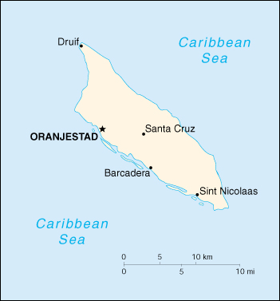

(part of the Kingdom of the Netherlands)
|
Aruba (part of the Kingdom of the Netherlands) |
|
| Introduction Geography People Government Economy Communications Transportation Military Transnational Issues | ||
|  | ||
| Aruba | Introduction | Top of Page |
| Background: | Discovered and claimed for Spain in 1499, Aruba was acquired by the Dutch in 1636. The island's economy has been dominated by three main industries. A 19th century gold rush was followed by prosperity brought on by the opening in 1924 of an oil refinery. The last decades of the 20th century saw a boom in the tourism industry. Aruba seceded from the Netherlands Antilles in 1986 and became a separate, autonomous member of the Kingdom of the Netherlands. Movement toward full independence was halted at Aruba's request in 1990. |
| Aruba | Geography | Top of Page |
| Location: | Caribbean, island in the Caribbean Sea, north of Venezuela |
| Geographic coordinates: | 12 30 N, 69 58 W |
| Map references: | Central America and the Caribbean |
| Area: |
total:
193 sq km
land: 193 sq km water: 0 sq km |
| Area - comparative: | slightly larger than Washington, DC |
| Land boundaries: | 0 km |
| Coastline: | 68.5 km |
| Maritime claims: | territorial sea: 12 NM |
| Climate: | tropical marine; little seasonal temperature variation |
| Terrain: | flat with a few hills; scant vegetation |
| Elevation extremes: |
lowest point:
Caribbean Sea 0 m
highest point: Mount Jamanota 188 m |
| Natural resources: | NEGL; white sandy beaches |
| Land use: |
arable land:
7% (including aloe 0.01%)
permanent crops: 0% permanent pastures: 0% forests and woodland: 0% other: 93% (1993 est.) |
| Irrigated land: | 0.01 sq km |
| Natural hazards: | lies outside the Caribbean hurricane belt |
| Environment - current issues: | NA |
| Aruba | People | Top of Page |
| Population: | 70,007 (July 2001 est.) |
| Age structure: |
0-14 years:
21.29% (male 7,709; female 7,193)
15-64 years: 68.52% (male 23,111; female 24,859) 65 years and over: 10.19% (male 2,954; female 4,181) (2001 est.) |
| Population growth rate: | 0.64% (2001 est.) |
| Birth rate: | 12.64 births/1,000 population (2001 est.) |
| Death rate: | 6.21 deaths/1,000 population (2001 est.) |
| Net migration rate: | NEGL |
| Sex ratio: |
at birth:
1.05 male(s)/female
under 15 years: 1.07 male(s)/female 15-64 years: 0.93 male(s)/female 65 years and over: 0.71 male(s)/female total population: 0.93 male(s)/female (2001 est.) |
| Infant mortality rate: | 6.39 deaths/1,000 live births (2001 est.) |
| Life expectancy at birth: |
total population:
78.52 years
male: 75.16 years female: 82.04 years (2001 est.) |
| Total fertility rate: | 1.8 children born/woman (2001 est.) |
| HIV/AIDS - adult prevalence rate: | NA% |
| HIV/AIDS - people living with HIV/AIDS: | NA |
| HIV/AIDS - deaths: | NA |
| Nationality: |
noun:
Aruban(s)
adjective: Aruban; Dutch |
| Ethnic groups: | mixed white/Caribbean Amerindian 80% |
| Religions: | Roman Catholic 82%, Protestant 8%, Hindu, Muslim, Confucian, Jewish |
| Languages: | Dutch (official), Papiamento (a Spanish, Portuguese, Dutch, English dialect), English (widely spoken), Spanish |
| Literacy: |
definition:
NA
total population: 97% male: NA% female: NA% |
| Aruba | Government | Top of Page |
| Country name: |
conventional long form:
none
conventional short form: Aruba |
| Dependency status: | part of the Kingdom of the Netherlands; full autonomy in internal affairs obtained in 1986 upon separation from the Netherlands Antilles; Dutch Government responsible for defense and foreign affairs |
| Government type: | parliamentary democracy |
| Capital: | Oranjestad |
| Administrative divisions: | none (part of the Kingdom of the Netherlands) |
| Independence: | none (part of the Kingdom of the Netherlands) |
| National holiday: | Flag Day, 18 March |
| Constitution: | 1 January 1986 |
| Legal system: | based on Dutch civil law system, with some English common law influence |
| Suffrage: | 18 years of age; universal |
| Executive branch: |
chief of state:
Queen BEATRIX Wilhelmina Armgard of the Netherlands (since 30 April 1980), represented by Governor General Olindo KOOLMAN (since 1 January 1992)
head of government: Prime Minister Jan (Henny) H. EMAN (since 29 July 1994) and Deputy Prime Minister Lili BEKE-MARTINEZ cabinet: Council of Ministers (elected by the Staten) elections: the monarch is hereditary; governor general appointed for a six-year term by the monarch; prime minister and deputy prime minister elected by the Staten for four-year terms; election last held 12 July 1997 (next to be held by December 2001) election results: Jan (Henny) H. EMAN elected prime minister; percent of legislative vote - NA%; Lili BEKE-MARTINEZ elected deputy prime minister; percent of legislative vote - NA% |
| Legislative branch: |
unicameral Legislature or Staten (21 seats; members elected by direct, popular vote to serve four-year terms)
elections: last held 12 December 1997 (next to be held by NA December 2001) election results: percent of vote by party - AVP 43%, MEP 39%, OLA 9% PPA 4%, ADN 2%, PARA 1%, MAS 0.5%; seats by party - AVP 10, MEP 9, OLA 2 |
| Judicial branch: | Joint High Court of Justice (judges are appointed by the monarch) |
| Political parties and leaders: | Aruba Solidarity Movement or MAS [leader NA]; Aruban Democratic Party or PDA [Leo BERLINSKI]; Aruban Liberal Party or OLA [Glenbert CROES]; Aruban Patriotic Party or PPA [Benny NISBET]; Aruban People's Party or AVP [Tico CROES]; Electoral Movement Party or MEP [Nelson ODUBER]; For a Restructured Aruba Now or PARA [leader NA]; National Democratic Action or ADN [Pedro Charro KELLY] |
| Political pressure groups and leaders: | NA |
| International organization participation: | Caricom (observer), ECLAC (associate), Interpol, IOC, UNESCO (associate), WCL, WToO (associate) |
| Diplomatic representation in the US: | none (represented by the Kingdom of the Netherlands) |
| Diplomatic representation from the US: |
chief of mission:
Consul General Barbara J. STEPHENSON
embassy: J. B. Gorsiraweg #1, Curacao mailing address: P. O. Box 158, Willemstad, Curacao telephone: [599] (9) 461-3066 FAX: [599] (9) 461-6489 |
| Flag description: | blue, with two narrow, horizontal, yellow stripes across the lower portion and a red, four-pointed star outlined in white in the upper hoist-side corner |
| Aruba | Economy | Top of Page |
| Economy - overview: | Tourism is the mainstay of the Aruban economy, although offshore banking and oil refining and storage are also important. The rapid growth of the tourism sector over the last decade has resulted in a substantial expansion of other activities. Construction has boomed, with hotel capacity five times the 1985 level. In addition, the reopening of the country's oil refinery in 1993, a major source of employment and foreign exchange earnings, has further spurred growth. Aruba's small labor force and less than 1% unemployment rate have led to a large number of unfilled job vacancies, despite sharp rises in wage rates in recent years. |
| GDP: | purchasing power parity - $2 billion (2000 est.) |
| GDP - real growth rate: | 3.5% (2000 est.) |
| GDP - per capita: | purchasing power parity - $28,000 (2000 est.) |
| GDP - composition by sector: |
agriculture:
NA%
industry: NA% services: NA% |
| Population below poverty line: | NA% |
| Household income or consumption by percentage share: |
lowest 10%:
NA%
highest 10%: NA% |
| Inflation rate (consumer prices): | 4.2% (2000 est.) |
| Labor force: | 41,501 (1997 est.) |
| Labor force - by occupation: | most employment is in wholesale and retail trade and repair, followed by hotels and restaurants; oil refining |
| Unemployment rate: | 0.6% (1999 est.) |
| Budget: |
revenues:
$NA
expenditures: $541 million, including capital expenditures of $NA (2000 est.) |
| Industries: | tourism, transshipment facilities, oil refining |
| Industrial production growth rate: | NA% |
| Electricity - production: | 450 million kWh (1999) |
| Electricity - production by source: |
fossil fuel:
100%
hydro: 0% nuclear: 0% other: 0% (1999) |
| Electricity - consumption: | 418.5 million kWh (1999) |
| Electricity - exports: | 0 kWh (1999) |
| Electricity - imports: | 0 kWh (1999) |
| Agriculture - products: | aloes; livestock; fish |
| Exports: | $2.2 billion (including oil reexports) (2000 est.) |
| Exports - commodities: | live animals and animal products, art and collectibles, machinery and electrical equipment, transport equipment |
| Exports - partners: | US 42%, Colombia 20%, Netherlands 12% (1999) |
| Imports: | $2.5 billion (2000 est.) |
| Imports - commodities: | machinery and electrical equipment, crude oil for refining and reexport, chemicals; foodstuffs |
| Imports - partners: | US 63%, Netherlands 11%, Netherlands Antilles 3%, Japan (1999) |
| Debt - external: | $285 million (1996) |
| Economic aid - recipient: | $26 million (1995); note - the Netherlands provided a $127 million aid package to Aruba and Suriname in 1996 |
| Currency: | Aruban guilder/florin (AWG) |
| Currency code: | AWG |
| Exchange rates: | Aruban guilders/florins per US dollar - 1.7900 (fixed rate since 1986) |
| Fiscal year: | calendar year |
| Aruba | Communications | Top of Page |
| Telephones - main lines in use: | 33,000 (1997) |
| Telephones - mobile cellular: | 3,402 (1997) |
| Telephone system: |
general assessment:
NA
domestic: more than adequate international: 1 submarine cable to Sint Maarten (Netherlands Antilles); extensive interisland microwave radio relay links |
| Radio broadcast stations: | AM 4, FM 6, shortwave 0 (1998) |
| Radios: | 50,000 (1997) |
| Television broadcast stations: | 1 (1997) |
| Televisions: | 20,000 (1997) |
| Internet country code: | .aw |
| Internet Service Providers (ISPs): | NA |
| Internet users: | 4,000 (2000) |
| Aruba | Transportation | Top of Page |
| Railways: | 0 km |
| Highways: |
total:
800 km
paved: 513 km unpaved: 287 km note: most coastal roads are paved, while unpaved roads serve large tracts of the interior (1995) |
| Waterways: | none |
| Ports and harbors: | Barcadera, Oranjestad, Sint Nicolaas |
| Merchant marine: |
total:
1 ship (1,000 GRT or over) totaling 3,120 GRT/3,635 DWT
ships by type: cargo 1 (2000 est.) |
| Airports: | 1 (2000 est.) |
| Airports - with paved runways: |
total:
1
2,438 to 3,047 m: 1 (2000 est.) |
| Aruba | Military | Top of Page |
| Military branches: | Royal Dutch Navy and Marines, Coast Guard |
| Military - note: | defense is the responsibility of the Kingdom of the Netherlands |
| Aruba | Transnational Issues | Top of Page |
| Disputes - international: | none |
| Illicit drugs: | drug-money-laundering center and transit point for narcotics bound for the US and Europe |
{kind=link}
{kind=link}